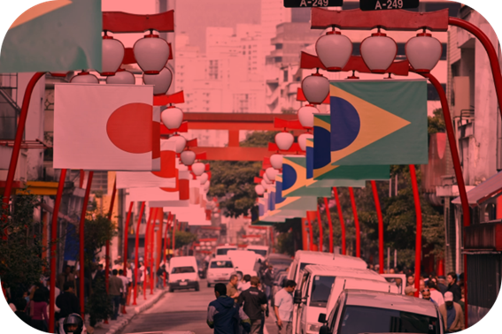

Criação do Bairro
No século XIX, o bairro era conhecido como Bairro da Pólvora, em referência à Casa da pólvora, construída em 1754. Era uma região periférica da cidade. Lá se localizava o largo da Forca, nomeado em função da presença de uma forca que era utilizada para a execução da pena de morte. Ela funcionou até 1870. A partir de então, o largo passou a se chamar Largo da Liberdade, e o nome se estendeu ao bairro.Existem duas versões para a adoção do nome "Liberdade": uma diz que é uma referência aos soldados que reivindicavam o aumento de seus salários à coroa portuguesa em 1821. Outra versão diz que o nome Liberdade é uma referência à abolição da escravidão.
Imigração Japonesa do Bairro:
A presença japonesa no bairro começa quando, em 1912, os imigrantes japoneses começaram a residir na rua Conde de Sarzedas, ladeira íngreme, onde, na parte baixa, havia um riacho e uma área de várzea.
Um dos motivos de procurarem essa rua é que quase todos os imóveis tinham porões, e os aluguéis dos quartos no subsolo eram incrivelmente baratos. Nesses quartos, moravam apenas grupos de pessoas. Para aqueles imigrantes, aquele cantinho da cidade de São Paulo significava esperança por dias melhores.
Por ser um bairro central, de lá poderiam se locomover facilmente para os locais de trabalho. Em 1915, foi fundada a Taisho Shogakko (Escola Primária Taisho), em 1932, eram cercade 2 mil os japoneses na
cidade de São Paulo.